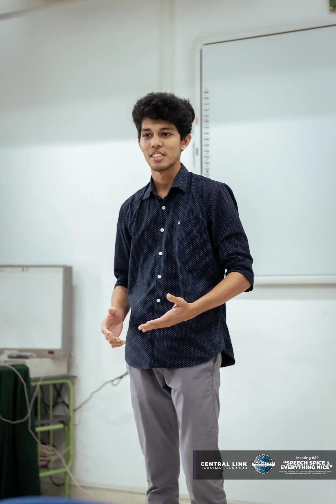

|
 |
PERERA J.D.T.Index: E/21/291 I'm Dineth Perera, a third year undergraduate student at the University of Peradeniya, specializing in Electrical and Electronic Engineering.My intrest lie in computer vision and machine learning.Currently i'm involved in computer vision for remote sensing applications.
Supervisor: Prof.Roshan Godaliyadda |
About the Project
Change detection is the process of identifying and classifying changes over the Earth's surface due to natural and human activities. This is crucial for monitoring and understanding geographical transformations.
Our project focuses on building a change detection algorithm, reviewing the limitations of modern techniques, and proposing improvements for more accurate and efficient detection.
| Datasets | DSIFN-CD, WHU-CD, Disaster Dataset |
| Team | M.T. Firdous · J.D.T. Perera · S.M.O.T. Samarakoon |
| Duration | 14 Weeks |
Project Schedule
| Week | Title | Status |
|---|---|---|
| W01 | Literature Review and Problem Understanding | Completed |
| W02 | Dataset Study and Disaster Data Planning | Completed |
| W03 | Controlled Benchmark Design | Completed |
| W04 | Benchmark Implementation Setup | In progress |
| W05 | State-Space Model Benchmarking | Proposed |
| W06 | Boundary and Domain-Shift Analysis | Proposed |
| W07 | Disaster Dataset Annotation Phase I | Proposed |
| W08 | Mid-Project Review and Method Direction | Proposed |
| W09 | Binary Change Detection Model Design | Proposed |
| W10 | Region-Boundary Refinement Module | Proposed |
| W11 | Decoder, Refinement Head, and Loss Design | Proposed |
| W12 | Training on Benchmark Change Detection Datasets | Proposed |
| W13 | Evaluation, Ablation, and Model Comparison | Proposed |
| W14 | Final Dataset Review and Project Documentation | Proposed |
Select a week from the sidebar to view details.